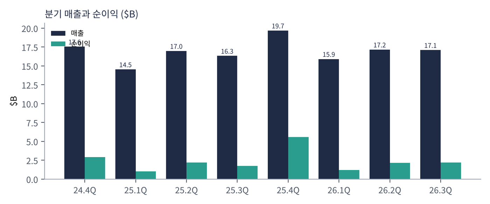
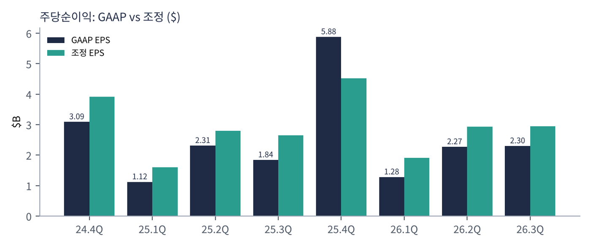
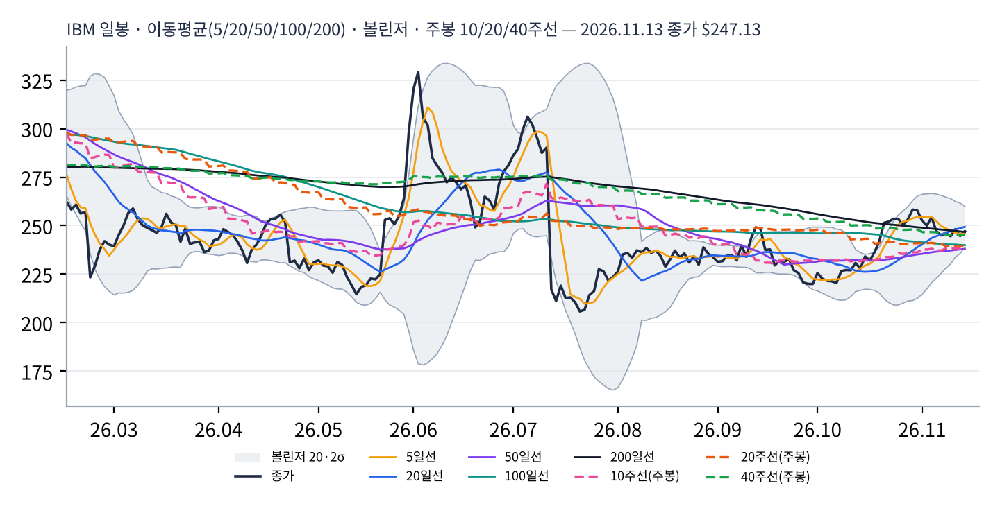
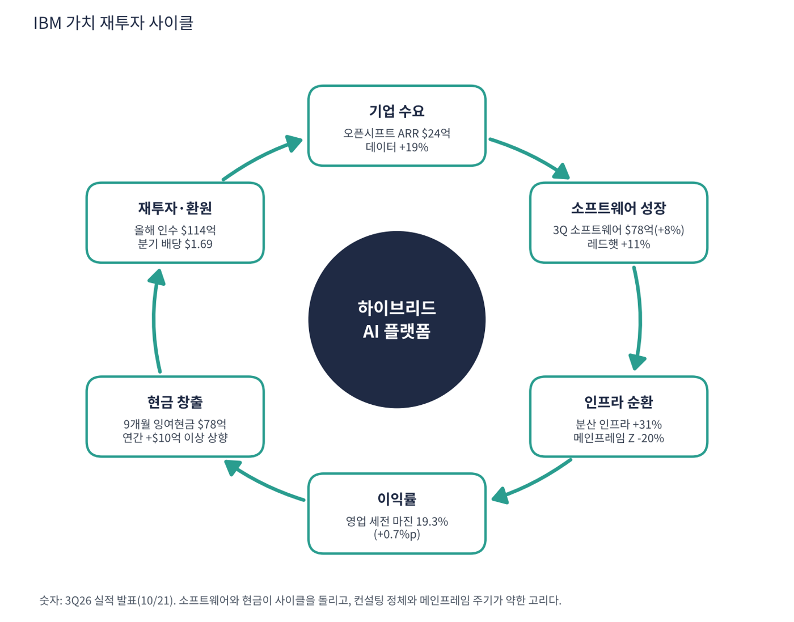

IBM은 1911년에 세워진 미국 기업용 IT 회사다. 지금은 레드햇 기반 하이브리드 클라우드 소프트웨어, 컨설팅, 메인프레임·분산 서버·스토리지 인프라를 묶어 판다. 소프트웨어가 매출의 절반 가까이를 차지하고 현금을 만드는, 성장은 느리지만 현금이 안정적인 '기업용 AI·하이브리드 클라우드' 회사다.
| 항목 | 내용 |
|---|---|
| 종목 | International Business Machines (IBM) · NYSE · IT 서비스 · 본사 미국 뉴욕주 아몬크 |
| 밸류에이션 | PER 21.1배(GAAP TTM) · P/S 3.34배 (11/13 종가 $247.13) |
| 최근 분기(3Q26) | 매출 $171.0억(+4.7%, 환율 제외 +6%), GAAP EPS $2.30(순이익 $21.9억), 조정 EPS $2.95(+11%) |
| 부문(3Q) | 소프트웨어 $78억(+8%), 컨설팅 $53억(보합), 인프라 $37억(+4%), 금융 $2억(-4%) |
| 현금·부채 | 현금 등 $111억, 총차입금 약 $671억(금융 사업 포함, 스캐너), TTM 조정 EBITDA 약 $200억, TTM 잉여현금 약 $147억(스캐너) |
| 9개월 현금흐름 | 영업현금 $118억, 잉여현금 $78억(+$6억). 3Q 잉여현금 $30억(+$7억) |
| 가이던스(2026) | 환율 제외 매출 +4~5%, 영업 세전 마진 +1.0%p, 잉여현금 증가폭 '$10억 이상'으로 상향 |
| 다음 실적 | 4Q26 실적: 2027년 1월 27일 예정(트레이딩뷰 추정) |
| 직책 | 인물 | 역할·특징 |
|---|---|---|
| 회장·CEO | 아르빈드 크리슈나 | 하이브리드 클라우드와 AI에 집중하는 전략을 이끌고 있다 |
| CFO | 제임스 카바노 | AI를 사내 생산성과 현금흐름 개선에 쓰는 점을 강조한다 |
경영 스타일: '소프트웨어와 현금 중심, 인수로 보강'. 올해 인수에 $114억을 썼고, 분기 배당 $1.69(연 $6.76, 현재가 기준 약 2.7%)를 유지한다. 3Q에는 2Q에 미뤄졌던 메인프레임 거래가 3Q에 마무리됐다고 경영진이 밝혔다.
레드햇 오픈시프트 연간 반복 매출(ARR) $24억, 데이터 부문 +19%, 분산 인프라 +31%가 성장 축이다. 경영진은 3Q 서한에서 AI를 사내 생산성에도 쓴다고 설명했다.
경영진은 고객이 '슈퍼 인텔리전스'를 운영 모델 전체에 적용하고 있다고 설명한다. 컨설팅이 정체돼 있어 소프트웨어 성장이 이를 얼마나 메우는지가 관건이다.
다음 실적발표는 세 가지 질문에 답하는 자리다.
1. 인프라가 이번 분기에 개선되나?
2. 악재 '컨설팅 정체' 부담이 줄어드나?
3. 악재 '메인프레임 주기' 부담이 줄어드나?
한 줄 판정 규칙: 첫 질문의 인프라가 좋아지면 약한 고리가 풀리고, 그렇지 않으면 현재 사이클의 약점이 그대로 남는다.
일정: 다음 발표일은 확인 필요(이번 분기 발표 후 일정 미확정). 위 현재값은 이 보고서의 기존 숫자다.
| 분기 | 매출 | 순이익 | EPS | 조정 EPS | 특이 사항 |
|---|---|---|---|---|---|
| 2024.4Q | $175.5억 | $29.1억 | 3.09 | 3.92 | |
| 2025.1Q | $145.4억 | $10.6억 | 1.12 | 1.60 | |
| 2025.2Q | $169.8억 | $21.9억 | 2.31 | 2.80 | |
| 2025.3Q | $163.3억 | $17.4억 | 1.84 | 2.65 | |
| 2025.4Q | $196.9억 | $56.0억 | 5.88 | 4.52 | GAAP EPS 급등(원인 미확인) |
| 2026.1Q | $159.2억 | $12.2억 | 1.28 | 1.91 | |
| 2026.2Q | $171.6억 | $21.6억 | 2.27 | 2.93 | 메인프레임 이연 |
| 2026.3Q | $171.0억 | $21.9억 | 2.30 | 2.95 | 소프트웨어 +8%, 4~5% 성장 유지 |


흐름 요약: 분기 매출은 $145~197억 범위에서 4분기에 가장 크고 1분기에 가장 작은 계절성이 있다. 3Q26 매출은 전년 동기보다 4.7% 늘었다. GAAP EPS는 4Q25에 $5.88로 튀었는데 이 분기 순이익이 $56.0억으로 커졌기 때문이고 조정 EPS는 $4.52였다(GAAP과 조정의 차이 원인은 확인하지 못했다). 이 때문에 TTM GAAP EPS 성장률(+40%)은 부풀려져 있고, 조정 EPS 기준 성장률은 +12%다. 영업이익과 분기 설비투자는 SEC 분기 값이 연간 누적과 섞여 있어 이 표에서 뺐다.
| 부문 | 3Q26 매출 | 증감 | 비고 |
|---|---|---|---|
| 소프트웨어 | $78억 | +8% | 레드햇 +11%, 데이터 +19%, 거래 처리 +9%, 자동화 -3% |
| 컨설팅 | $53억 | 보합 | 환율 제외 +2% |
| 인프라 | $37억 | +4% | 분산 +31%, IBM Z -20%(2Q 이연분 반영 후 주기), 인프라 지원 -3% |
| 금융 | $2억 | -4% |
소프트웨어가 이익을 만든다. 소프트웨어는 매출의 약 46%이며 성장도 가장 빠르다. 컨설팅은 매출의 31%지만 성장이 거의 없다. 인프라는 신형 메인프레임(Z17) 주기에 따라 분기 변동이 크다. 3Q 총이익률은 GAAP 56.8%, 조정 58.5%였다.
IBM의 방향은 '하이브리드 클라우드와 AI를 묶어 기업 운영 전체에 넣는 것'이다.
| 축 | 최근 움직임 |
|---|---|
| 소프트웨어 | 레드햇·데이터·거래 처리 중심, 2026 소프트웨어 +7~8% 전망(경영진 콜) |
| 인프라 | 분산 인프라·스토리지 호조, 메인프레임 Z17 주기 |
| 인수 | 올해 $114억 투입 |
| 주주 환원 | 분기 배당 $1.69 |

| 이동평균 | 값 | 종가 대비 | 해석 |
|---|---|---|---|
| 5일선 | $246.13 | +0.4% | 실적 후 반등 |
| 20일선 | $249.40 | -0.9% | 10월 말 급등 후 |
| 50일선 | $238.02 | +3.8% | 8~10월 저점 이후 상승 |
| 100일선 | $239.92 | +3.0% | 박스 중심 |
| 200일선 | $246.69 | +0.2% | 현재가가 바로 위 |
주봉 흐름: 2025년 11월 $305 부근 → 2026년 2월 $240대로 하락 → 6/2 고점 $332.5 → 7월 둘째 주 $297에서 $204로 -31%(7/23 저점 $199) → 10월 3Q 실적 주 +10% → 현재 $247로 200일선과 같은 자리다.
| 규칙 | 기준 | 현재 값 | 신호 |
|---|---|---|---|
| 장기 추세 필터 | 종가 vs 200일선 | $247.13 > $246.69 | 매수 |
| 중장기 교차 | 50일선 vs 200일선 | $238.02 < $246.69 | 매도 |
| 단기 교차 | 20일선 vs 50일선 | $249.40 > $238.02 | 매수 |
| 돈키언 채널 | 55일 고가 $259.87 / 저가 $217.80 | 중간값 $238.84 위 | 매수 |
| 1개월 모멘텀 | 21거래일 수익률 | +5.6% (기준 $234.12) | 매수 |
| 3개월 모멘텀 | 63거래일 수익률 | +8.0% (기준 $228.85) | 매수 |
| 6개월 모멘텀 | 126거래일 수익률 | +12.7% (기준 $219.30) | 매수 |
| 12개월 모멘텀 | 252거래일 수익률 | -21.5% (기준 $314.98) | 매도 |
| 종합 (8개 평균) | +0.50 | 매수 우위 |
해석: 12개월 모멘텀만 매도(기준가 $315). 나머지는 200일선 위 매수지만 50일선($238)이 200일선($247) 아래라 중장기 교차는 매도다. 14일 ATR $6.31 (2.6%).
| 가격 | 무엇이 바뀌나 | 의미 |
|---|---|---|
| $246.7 이탈 | 200일선 | 장기 추세 필터 매수 → 매도 |
| $246.7 돌파 후 50일선 $238 상향 | 50/200 교차 | 중장기 교차 매수 전환 |
| $315 근처 | 12개월 기준가 | 12개월 모멘텀 매수 전환 |
| 구분 | 가격대 | 근거 |
|---|---|---|
| 저항 2 | $290 ~ 301 | 6월 반등 구간 |
| 저항 1 | $250 ~ 260 | 20일선, 55일 고점 $259.9 |
| 지지 1 | $238 | 50일선, 돈키언 중간값 |
| 지지 2 | $218 | 55일 저점 |
200일선과 같은 자리라 방향 확인이 필요하다. $238~247에서 계획 비중의 30%만 진입하고 $226(ATR 약 2배 아래) 종가 이탈 시 손절한다. 목표는 1차 $260(55일 고점), 2차 $290. 조건은 4Q 실적(1월 말)에서 소프트웨어 +8% 이상과 잉여현금 가이던스 유지다.
| 악재 요인 | 내용 | 강도 |
|---|---|---|
| 컨설팅 정체 | 3Q 매출 보합(환율 제외 +2%), 연간 저~중간 한 자릿수 | 중간 |
| 메인프레임 주기 | 3Q IBM Z -20%. 신형 주기 효과 후 하락 위험 | 중간 |
| 차입·이자 | 총차입금 약 $671억(금융 포함), 현금 $111억으로 감소 | 중간 |
| 일회성 EPS 변동 | GAAP EPS가 크게 변동(3Q24에는 연금 관련 비용으로 순손실) | 참고 |
| 티커 | 회사 | PER(TTM) | PEG | P/S | EPS 성장(YoY) |
|---|---|---|---|---|---|
| IBM | IBM | 21.1배 | 1.65 | 3.34배 | +12% |
| ORCL | 오라클 | 18.8배 | 0.38 | 4.85배 | +48% |
| MSFT | 마이크로소프트 | 28.5배 | 0.76 | 11.40배 | +36% |
| NOW | 서비스나우 | 74.0배 | – | 6.89배 | -16% |
| CRM | 세일즈포스 | 19.6배 | 0.33 | 3.99배 | +59% |
| DELL | 델 | 20.1배 | 0.12 | 1.42배 | +153% |
IBM의 PEG와 EPS 성장은 조정 EPS 기준(PER은 GAAP TTM). 다른 종목은 11/9 값이라 시점이 다르다.
비교 결론: IBM의 P/S 3.3배는 오라클·세일즈포스와 비슷한 수준이고 PER 21배도 동종과 큰 차이가 없다. 성장은 느리지만(조정 EPS +12%) 잉여현금 수익률이 높다는 점이 다르다.
IBM은 현금 창출이 안정적이지만 차입금이 크다. 현금 등 $111억(연초 대비 -$34억, 인수로 감소), 총차입금 약 $671억이며 이 중 상당 부분은 금융 사업(고객 대출) 지원 차입이다(비중은 확인하지 못함).
| 지표 | 값 | 계산·출처 | 해석 |
|---|---|---|---|
| 현금 등 | $111억 | 3Q26 회사 발표 | 연초 $145억에서 감소 |
| 총차입금 | 약 $671억 | 스캐너 | 금융 사업 차입 포함 |
| TTM 잉여현금흐름 | 약 $147억 | 스캐너 | – |
| 9개월 잉여현금 | $78억(+$6억) | 회사 발표 | 연간 +$10억 이상 가이던스 |
| 배당 | $6.76/주(연) | 분기 $1.69 | 현재가 대비 2.7% |
| 기준 | 값 | 비고 |
|---|---|---|
| P/S (TTM) | 3.34배 | TTM 매출 약 $699억 |
| P/FCF | 약 15.9배 | TTM 잉여현금 $147억 (내 계산) |
| 동종 | 오라클 4.9, 서비스나우 6.9, 세일즈포스 4.0 | 11/9 스캐너 |
해석: IBM은 이익 기반 가치주로 평가받는다. 성장 대비 배수가 싸지는 않지만, 잉여현금 수익률 6.3%와 배당 2.7%가 하단을 받쳐준다. 스트레스 가정: P/FCF 12배면 약 $186 (-25%), 18배면 약 $279 (+13%)이다(내 가정, 잉여현금 $147억 고정).
| 지표 | 값 | 판정 |
|---|---|---|
| PER (GAAP TTM) | 21.1배 | TTM EPS $11.72(4Q25 GAAP EPS 급등 포함) |
| PER (조정 TTM) | 20.1배 | 최근 4분기 조정 EPS 합 $12.31 (내 계산) |
| EV / EBITDA | 약 14.5배 | EV(차입금 $671억 − 현금 $111억 반영),896억, ÷ $200억 |
| 순부채 / EBITDA | 약 2.8배 | 순부채 $560억 ÷ $200억 (금융 사업 차입 포함) |
| 방식 | PER | EPS 성장률 | PEG | 판정 |
|---|---|---|---|---|
| 트레이딩뷰 (GAAP TTM) | 21.1배 | +40.2% | 0.52 | 투자 적격 4Q25 GAAP EPS 급등이 만든 착시 |
| 조정 EPS 기준 (일회성 이익 제외) | 20.1배 | +12.2% | 1.65 | 기준 초과 |
| 조정 TTM $12.31 ÷ 직전 TTM $10.97 | – | – | – | 직전: 4Q24 3.92 + 1Q25 1.60 + 2Q25 2.80 + 3Q25 2.65 |
판정: 조정 PEG 1.65로 기준(1.0) 초과. GAAP 기준 PEG 0.52는 4Q25의 큰 GAAP EPS($5.88)가 성장률을 부풀려서 나온 값이라 쓰지 않았다. 일회성 이익 포함 PEG는 0.52다. 조정 EPS는 트레이딩뷰 Reported 기준이다.

IBM의 사이클은 소프트웨어 성장 → 이익률 개선 → 잉여현금 → 인수·배당의 순환이다. 컨설팅 정체와 메인프레임 주기가 약한 고리다.
| 고리 | 현재 숫자 | 고리 강도 | 약해지는 신호 |
|---|---|---|---|
| ① 기업 수요 | 오픈시프트 ARR $24억, 데이터 +19% | 강함 | 소프트웨어 성장 둔화 |
| ② 소프트웨어 | 3Q +8%(환율 제외 +9%), 연간 +7~8% 전망 | 강함 | 자동화 -3% 확대 |
| ③ 인프라 | 분산 +31%, Z -20% | 변동 | 메인프레임 주기 하락 |
| ④ 이익률 | 영업 세전 19.3%(+0.7%p) | 개선 | 컨설팅 가격 압박 |
| ⑤ 현금 | 9개월 잉여현금 $78억, 연간 +$10억 이상 | 강함 | 세금·이자·설비투자 증가 |
| ⑥ 재투자·환원 | 인수 $114억, 배당 연 $6.76 | 부담 | 현금 $111억으로 감소, 차입 증가 |
구조: 강한 고리는 ①②⑤, 약한 고리는 ③⑥이다. 인수에 현금을 쓰면서 현금 보유가 줄었다.